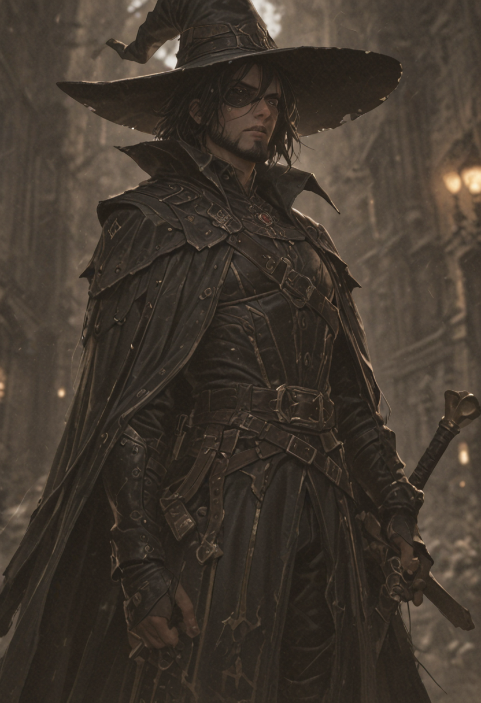
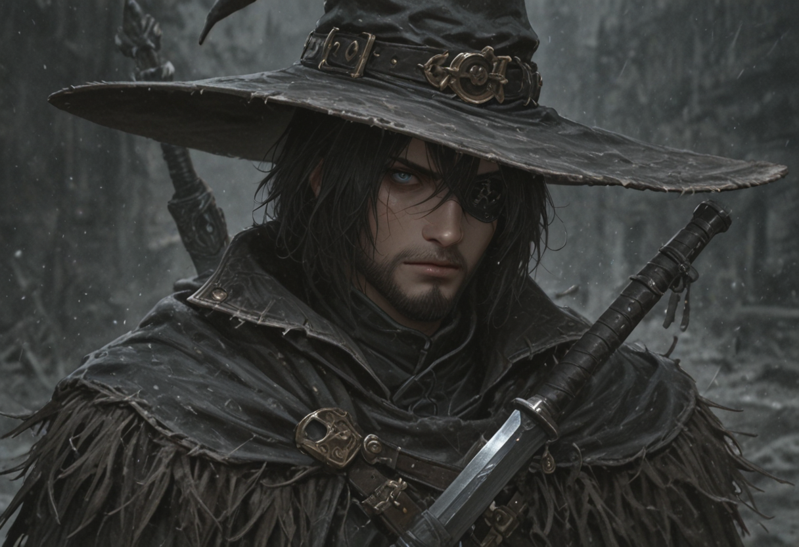
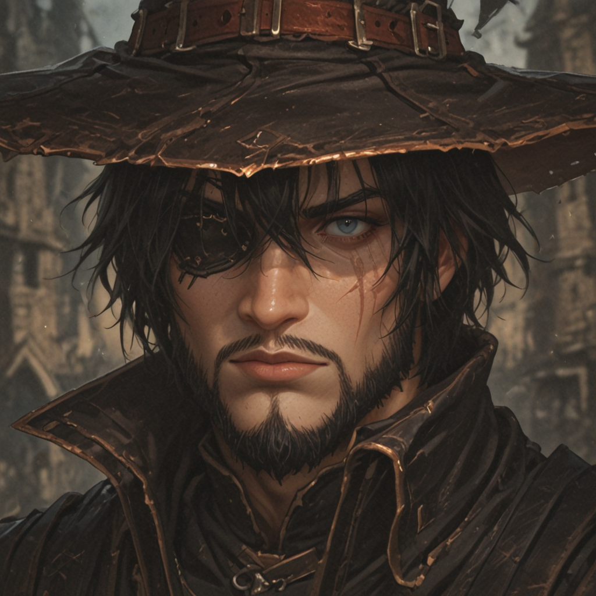
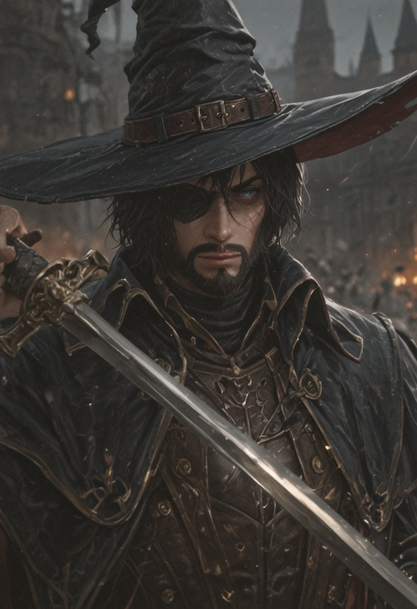

The Unrelenting Purge
"Guilty or innocent, it matters not. The ritual must be completed. The impurity must be purged by iron and silence."
One of the most feared veteran witch hunters in the Valkyrion territories, Barog is a man who long ago discarded the luxury of doubt. He scours the provinces, maintaining ideological purity where diplomacy fails.
Hit Points160
Attack50
Initiative50
Size1
Armor0%
Crit Chance0%
Dodge0%
ProtectionNone
ImmunityMind
Combat Doctrine

Slash
BaseDeals standard physical damage to a single enemy in melee range.

Execution
ActiveDeals physical damage to an enemy. For each missing 1% of the target's HP, increase the damage by 1%.

Blind Justice
PassiveHis hatred for the arcane is absolute. Caster classes take an additional 30% damage from his attacks.
Image Gallery


